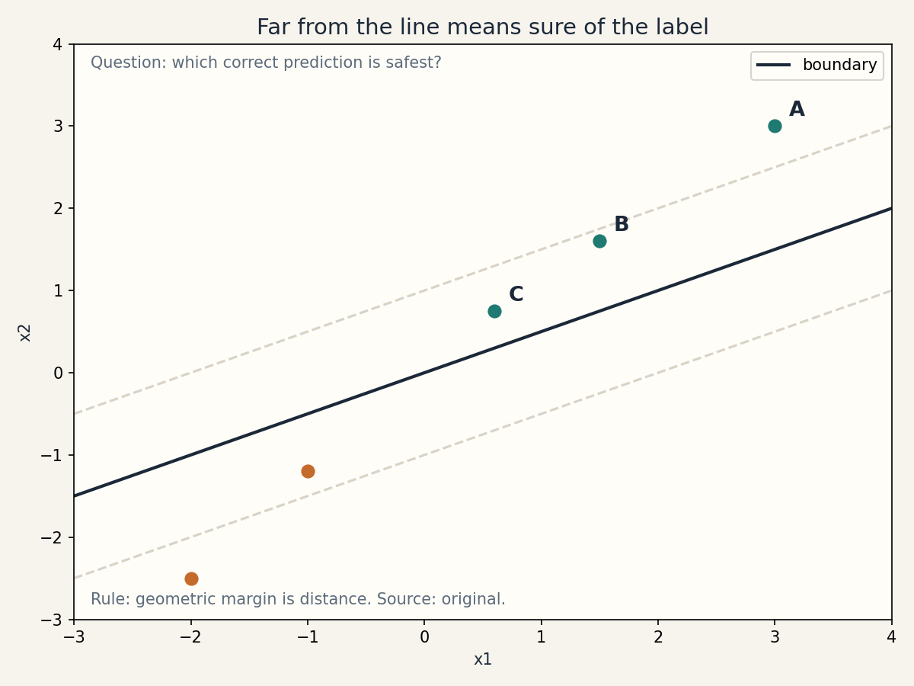
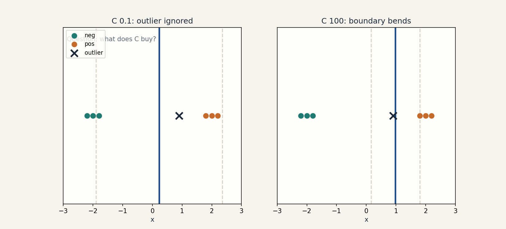

Lesson 06 · SVM
Lesson 06, Margins, SVMs, and dual optimization
Unit: cs229-U06. Leaf concepts: cs229-U06-C01 to C12. Date: 2026-10-06. Baseline: October 6, 2026.
Source mapping
Chapter 6 of the notes (SRC-01, PDF pages 61-79) was read in full on 2026-10-06. Section 6.1 gives the margin intuition (points A, B, C). Section 6.2 switches to y in {-1, 1} and the (w, b) notation. Section 6.3 defines functional and geometric margins with the scale-invariance argument. Section 6.4 derives the hard-margin primal. Section 6.5 gives Lagrange duality. Section 6.6 (dual derivation) gives W(alpha), the b* formula, and the support-vector prediction form. Section 6.7 gives the soft-margin primal/dual and the KKT complementarity conditions. Section 6.8 gives coordinate ascent and SMO. Leaf rows carry SOURCE ATTRIBUTION PENDING until the RUN 6 pass.
Scope and objectives
Scope: the max-margin classifier, its dual, and the algorithm that solves it.
Objectives: the learner can (1) compute functional and geometric margins, (2) derive the hard-margin primal, (3) state the KKT conditions, (4) derive the dual and identify support vectors, (5) explain the soft-margin trade-off, (6) sketch SMO.
Dependencies
Prerequisites: P03, P05, P09 (shared bridges, linked).
Not-yet-understood list:
- Margins as confidence (remediated in SL-01).
- The primal problem (remediated in SL-02).
- Duality (remediated in SL-03).
- Support vectors (remediated in SL-04).
SL-01: Functional and geometric margins
Covers C01 (functional/geometric margin), C02 (scale invariance).
Source anchor
SRC-01 sections 6.1-6.3, pages 61-65. Labels switch to y in {-1, 1}. Functional margin: y^{(i)}(w^T x^{(i)} + b). Geometric margin: functional margin divided by ||w||.
Motivating question
Point A is far from the boundary, point C sits next to it (notes page 62 figure). Both are classified correctly. Which prediction deserves more confidence?
Mental model
The functional margin is the signed score: positive means correct, larger means more confident. But scaling (w, b) by 2 doubles every functional margin without changing a single prediction. The geometric margin divides by ||w||: it is the actual Euclidean distance to the boundary, immune to scale changes.
Computed example
w = [3, 4], b = -25, x = (4, 3), y = 1. Score: 12 + 12 - 25 = -1. Functional margin: 1 * (-1) = -1: wrong side. ||w|| = 5. Geometric margin: -1/5 = -0.2: the point is 0.2 units on the wrong side. Scale (w, b) by 2: functional margin -2, geometric margin still -0.2.
Correctness checks
- Geometric margin sign matches correctness.
- Rescaling (w, b) leaves all geometric margins fixed. Test in code.
Nearest alternative
Logistic regression’s confidence is the probability, not a distance. Same ranking idea, different units.
Failure case
Maximizing the functional margin directly: the optimizer scales (w, b) to infinity instead of moving the boundary. The notes block this with the ||w|| = 1 constraint, then replace it by the functional-margin-1 scaling trick (notes page 66).
SL-02: The hard-margin primal
Covers C03 (hard margin), C04 (primal constraints).
Source anchor
SRC-01 section 6.4, pages 65-67. From max gamma with ||w|| = 1 to min (1/2)||w||^2 subject to y^{(i)}(w^T x^{(i)} + b) >= 1.
Motivating question
How do we turn “widest separating gap” into an optimization problem a solver can eat?
Derivation
Want: max geometric margin gamma with all examples at distance >= gamma. With ||w|| = 1, geometric = functional, but ||w|| = 1 is non-convex. Trick: the problem is scale-invariant, so fix the functional margin to 1 by rescaling. Then gamma = 1/||w||, and maximizing gamma equals the minimization of (1/2)||w||^2. Primal:
min_{w,b} (1/2)||w||^2 s.t. y^{(i)}(w^T x^{(i)} + b) >= 1 for all i.
Convex quadratic objective, linear constraints: solvable by QP code (notes page 67).
Computed example
Points: (-1, 0) label -1, (1, 0) label 1. By symmetry b = 0, w = [c, 0]. Constraints: (-1)(-c) >= 1 and (1)(c) >= 1, so c >= 1. Minimize (1/2) c^2: c = 1. w = [1, 0], margin 1/||w|| = 1. Boundary x = 0, gap from -1 to 1.
Correctness checks
- All constraints satisfied with equality on at least one example per class (the support vectors).
- Objective (1/2)||w||^2 decreases as the gap widens.
Nearest alternative
Perceptron: any separator, no margin preference. The primal picks the widest.
Failure case
Non-separable data: no (w, b) satisfies all constraints. The primal is infeasible. SL-05 repairs this with slack.
SL-03: Lagrange duality and KKT
Covers C05 (Lagrange duality), C06 (KKT).
Source anchor
SRC-01 sections 6.5-6.6, pages 67-72. Generalized Lagrangian, primal/dual values, KKT conditions (6.3-6.7), dual W(alpha) in (6.12).
Motivating question
The primal is a QP in w. Why rewrite it in terms of one variable per example?
Mental model
Constraints get prices: alpha_i >= 0 per example. The
Lagrangian L = (1/2)||w||^2 - sum_i alpha_i
[y^{(i)}(w^T x^{(i)} + b) - 1]. Minimizing over w, b
gives w = sum_i alpha_i y^{(i)} x^{(i)} and sum_i
alpha_i y^{(i)} = 0. Plug back: the dual depends only
on inner products
W(alpha) = sum_i alpha_i - (1/2) sum_{i,j} y^{(i)}
y^{(j)} alpha_i alpha_j
KKT conditions (notes 6.3-6.7): stationarity, primal feasibility, dual feasibility, complementary slackness: alpha_i [y^{(i)}(w^T x^{(i)} + b) - 1] = 0.
Why the dual matters
Two wins: (1) the data enters only through inner products, so kernels slot in (SL-04). (2) The solution is sparse: most alpha_i = 0.
Computed example
Two points: x^{(1)} = -1, y = -1. x^{(2)} = 1, y = 1.
Dual: max alpha_1 + alpha_2 - (1/2)[alpha_1^2 * 1 +
alpha_2^2 * 1 - 2 alpha_1 alpha_2 * 1] (since y^{(1)}
y^{(2)}
Correctness checks
- Complementary slackness: alpha_i > 0 implies the constraint is tight (margin exactly 1).
- sum_i alpha_i y^{(i)} = 0 holds at the solution.
- Dual value equals primal value (strong duality for this convex QP).
Nearest alternative
Solve the primal directly with QP software. Same answer, no sparsity insight, no kernel path.
Failure case
Forgetting the sum alpha_i y^{(i)} = 0 constraint: coordinate ascent on one alpha at a time cannot move (notes page 77). SMO updates pairs for exactly this reason.
SL-04: Support vectors and kernels
Covers C07 (support vectors), C11 (kernels).
Source anchor
SRC-01 section 6.6, pages 72-73. Prediction uses only
inner products with support vectors (6.15). Kernels
replace
Mental model
alpha_i > 0 marks a support vector: an example sitting exactly on the margin (or violating it, in the soft case). All other examples have alpha_i = 0 and do not affect w or predictions. The classifier is a weighted vote of the support vectors:
w^T x + b = sum_i alpha_i y^{(i)}
Replace the inner product with K: the SVM learns in infinite-dimensional feature spaces (notes page 73).
Computed example
Ring data from U05 with an SVM dual solved by a QP: support vectors land on the ring edges. Prediction at a new point touches only those. (Numerically: use sklearn? No: the lab implements SMO-lite on 20 points.)
Correctness checks
- Non-support examples can be deleted without changing (w, b). Test: refit without them.
- b* from (6.13): average of the margin boundaries.
Nearest alternative
Kernel logistic regression: dense alpha, probabilistic output, no sparsity.
Failure case
Thinking support vectors are the misclassified points: they are the margin points. A separable dataset has zero errors and still has support vectors.
Russian-doll ladder for the dual
- Shell 0: Question: which examples define the boundary? Observable: deleting non-supports changes nothing.
- Shell 1: Toy: the two-point dual above, a = 0.5.
- Shell 2: Objects: alpha, w, b, margins.
- Shell 3: Rule: price each constraint, minimize over w, maximize over prices.
- Shell 4: Derive: W(alpha) from the Lagrangian.
- Shell 5: Invariant: complementary slackness. Verify on the toy.
- Shell 6: Change one factor: move x^{(2)} to 3. Predict the margin widens and alpha drops. Verify.
- Shell 7: Counterexample: non-separable data makes the hard-margin dual infeasible. The primal has no solution.
- Shell 8: Compare: primal QP vs dual on n = 50, d = 2: same (w, b), dual exposes sparsity.
- Shell 9: Extension: count support vectors vs n on synthetic data. Falsifiable claim: the fraction shrinks as classes separate more.
- Shell 10: Production: a kernel SVM in production stores only support vectors. The decision is the kernel and the support budget.
SL-05: Soft margins and the C parameter
Covers C08 (soft margin/slack), C09 (regularization parameter).
Source anchor
SRC-01 section 6.7, pages 73-75. Primal: min (1/2)||w||^2 + C sum_i xi_i s.t. y^{(i)}(w^T x^{(i)} + b) >= 1 - xi_i, xi_i >= 0. Dual: same W(alpha) with 0 <= alpha_i <= C. KKT: alpha_i = 0 implies margin >= 1. alpha_i = C implies margin <= 1. 0 < alpha_i < C implies margin = 1.
Motivating question
One outlier drags the boundary across the room (notes page 74 figure). How do we let examples violate the margin at a price?
Mental model
Slack xi_i measures the margin violation in functional units. Pay C * xi_i per unit. Large C: violations are expensive, the boundary bends to outliers (hard-margin behavior). Small C: violations are cheap, the margin stays wide and some examples fall inside or across.
The dual change
Only the box changes: 0 <= alpha_i <= C. Everything else is the same W(alpha). This is the “surprising” result the notes highlight (page 74).
Computed example
Three points: (-1, 0) label -1, (1, 0) label 1, and an outlier (0.1, 0) label -1 sitting inside the positive region. Hard margin: infeasible (no line separates). Soft margin with C = 1: the optimizer pays slack on the outlier and keeps a wide margin on the clean points. With C = 1000: the boundary contorts to classify the outlier, margin shrinks. (Numerics in lab 03.)
Correctness checks
- KKT cases (6.16-6.18): each example falls in exactly one case. Verify on the solution.
- C -> infinity recovers hard margin on separable data. Test.
Nearest alternative
Hinge loss + L2 in the primal with SGD: same model, different solver, no alpha sparsity certificate.
Failure case
C picked by test accuracy: the test set is spent. Pick C by cross-validation (U09).
SL-06: Coordinate ascent and SMO
Covers C10 (SMO/coordinate ascent).
Source anchor
SRC-01 section 6.8, pages 75-79. Coordinate ascent optimizes one alpha at a time. The sum constraint forces pairs. SMO reoptimizes pairs analytically with clipping to [L, H].
Motivating question
The dual has n variables and one linear constraint. How do we maximize it without a generic QP solver?
Mental model
Coordinate ascent: hold all but one alpha fixed, optimize that one. Blocked: the sum alpha_i y^{(i)} = 0 constraint pins a single alpha given the rest. So update two at a time: the constraint becomes a line, the box [0, C]^2 clips the segment to [L, H], and the 1-D quadratic has a closed-form max. Clip it, update both, repeat. KKT violations pick the next pair.
The update sketch
Fix all but alpha_1, alpha_2. From the linear constraint: alpha_1 y^{(1)} + alpha_2 y^{(2)} = zeta (constant). Substitute into W: a quadratic in alpha_2. Unconstrained max at the vertex. Clip to [L, H]. Recover alpha_1 from the line (notes page 78).
Correctness checks
- KKT conditions within tol (0.01 to 0.001) at convergence.
- W(alpha) increases every step. Log it.
Complexity
Each pair update is O(1) given cached errors. A full pass is O(n^2) kernel evals naive, O(n) with caching. SMO beats generic QP by exploiting the structure.
Nearest alternative
Projected gradient on the dual. Interior-point QP. SMO wins on medium n by avoiding matrix factorizations.
Failure case
Updating one alpha at a time: zero progress, forever (notes page 77). The pair update is not an optimization. It is a feasibility requirement.
SL-07: Separability assumptions
Covers C12 (separability assumptions).
Motivating question
When is the max-margin story even applicable?
Mental model
Hard margin assumes separability. Soft margin assumes a good trade-off exists at some C. Kernels assume the feature space separates the data (more likely in high dimensions, not guaranteed). None of these assume the test data follows the same geometry: that is the IID assumption again (U01).
Diagnostic
Fit hard-margin. If infeasible, the data is not separable in the current features. Options: add slack (C), change the kernel, add features.
Failure case
A kernel that separates training perfectly with tiny sigma: separability achieved, generalization destroyed. Separability is necessary, not sufficient.
Assessment
Breadth recall
E01: Define functional and geometric margin. E02: Why is the functional margin a bad objective? E03: State the hard-margin primal. E04: State the dual and its constraints. E05: State complementary slackness. E06: What changes in the dual for the soft margin?
Deep oral ladders
L01 (margins): (1) Define both margins. (2) Toy: the (4,3) computation. (3) Show scale invariance of the geometric margin. (4) Implement and verify rescaling. (5) Compare margin confidence vs logistic probability. (6) Debug: optimizer scales weights to infinity. Name the missing constraint. (7) Critique: is a wide margin always better on test? (8) Design: pick the margin notion for a fraud detector.
L02 (dual): (1) State the Lagrangian. (2) Toy: the two-point dual. (3) Derive W(alpha). (4) Implement complementary slackness check. (5) Compare primal vs dual solutions. (6) Debug: single-alpha updates stall. name the cause. (7) Critique: the dual needs PSD. what if the kernel is invalid? (8) Design: choose the solver for n = 1e5.
Analytical exercises
E07: Points (-1,-1) label -1, (1,1) label 1. Find the hard-margin (w, b) and margin. Answer in keys. E08: Derive w = sum alpha_i y^{(i)} x^{(i)} from the Lagrangian. Answer in keys.
Failure diagnosis
E09: SMO’s W(alpha) decreases on some steps. Name two causes.
Counterfactual comparison
E10: Team A uses hard margin on separable data. Team B uses C = 0.01 on the same data. Who generalizes better and why?
Research question
E11: Measure the support-vector fraction vs class separation on synthetic data. State the falsifiable claim.
Implementation task
E12: Implement SMO-lite for 20 points (pair updates with clipping) and verify KKT within 0.01.
Visual units
visuals/u06/u06_margins.png: points A/B/C with the boundary and margin bands (source: original, computed).

visuals/u06/u06_soft_margin.png: outlier effect and the C trade-off (source: original, computed).

Research reading and extension
Read: SRC-01 chapter 6 in full, plus Platt’s SMO paper for the heuristics. Extension: implement SMO-lite and plot W(alpha) and KKT violations per pass. Falsifiable claim: violations fall geometrically and the support set stabilizes before full convergence.